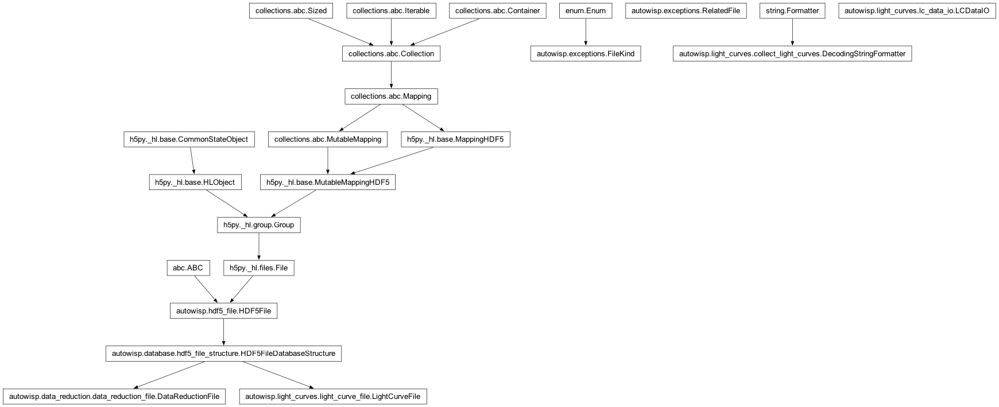
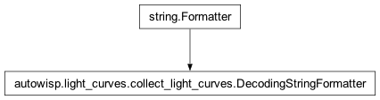

autowisp.light_curves.collect_light_curves module
Class Inheritance Diagram

Functions for creating light curves from DR files.
- class autowisp.light_curves.collect_light_curves.DecodingStringFormatter[source]
Bases:
Formatter
Add one more conversion type:
'd'that calls decode on the arg.
- autowisp.light_curves.collect_light_curves._prepare_lc_collection(dr_filenames, configuration, mark_end, *, dr_fname_parser, optional_header, observatory, **path_substitutions)[source]
Resolve everything the writing pass needs (see collect_light_curves).
Reads the first DR file and the single photref to settle the source extraction configuration, the catalog and the source list, drops any DR file with outlier pointing, and works out where each source’s lightcurve goes.
- Returns:
data_io, the survivingdr_filenames, the(source id, lc filename)pairs insources_lc_fnames, theframe_chunksize to process at a time, thecatalog(sources, header)pair the caller returns, andcatalog_fname– the resolved catalog filename, which only the query knows and the caller scopes onto its errors.
- Return type:
- autowisp.light_curves.collect_light_curves._write_lightcurves(prepared, mark_start, mark_end)[source]
Add the DR data to the lightcurves, one chunk of frames at a time.
- Parameters:
prepared (dict) – The result of
_prepare_lc_collection().mark_start – Progress callbacks, invoked per DR file.
mark_end – Progress callbacks, invoked per DR file.
- Returns:
None
- autowisp.light_curves.collect_light_curves.collect_light_curves(dr_filenames, configuration, mark_start, mark_end, *, dr_fname_parser=<function parse_fname_keywords>, optional_header=None, observatory=None, **path_substitutions)[source]
Add the data from a collection of DR files to LCs, creating LCs if needed.
- Parameters:
dr_filenames ([str]) – The filenames of the data reduction files to add to LCs.
configuration – Object with attributes configuring the LC collection procedure.
path_substitutions – Any substitutions to resolve paths within DR and LC files to data to read/write (e.g. versions of various componenents).
dr_fname_parser – See same name argument to LCDataIO::create().
optional_header – See same name argument to LCDataIO::create().
- Returns:
- [(src ID part 1, src ID part 2, …)];
The sources for which new lightcurves were created.